Watch Dogs - Entre réalité et fiction
Le hacking a souvent été le terrain des fantasmes les plus fous dans la fiction. Dès qu'on pense à un hacker, on visualise généralement un personnage encapuché, devant son ordinateur dans le noir, tapotant frénétiquement sur son clavier, affichant des lignes de codes vertes sur fond noir ou des fenêtres qui surgissent de partout.
Ces représentations relèvent souvent du fantasme cinématographique, où l'on privilégie l'aspect sensationnaliste et dramatique au détriment de la réalité, qui est sans doute moins palpitante à mettre en scène ((c'est pourtant tout aussi fun)).
Aujourd'hui, nous allons analyser le jeu vidéo Watch Dogs 1, développé par Ubisoft et sorti en 2014. Le jeu suit un hacker, Aiden Pearce, connu sous le pseudonyme du "Justicier". Après une tentative d'assassinat à son encontre, qui a entraîné la mort accidentelle de sa nièce, Lena Pearce, Aiden cherche à découvrir qui est responsable de cette attaque.
En revoyant un "Let's Play" de ce jeu, étant actuellement en plein dans l'étude du sujet, je me suis rendu compte qu'il était très captivant car il offre une grande liberté dans l'utilisation du téléphone. Cela m'a donné l'envie d'en faire une analyse approfondie afin de décrypter et explorer le réalisme du jeu.
1. Le Profiler
Dans le jeu, le personnage principal utilise un téléphone qui semble être rooté, il possède une application assez spéciale qui s'appelle le Profiler. C'est cette application qui permet à Aiden de réaliser la plupart de ses hacks.
Parmi ceux-ci, il existe une abilité passive qui permet au joueur de nous donner des informations sur (de profiler) les individus dans la rue.
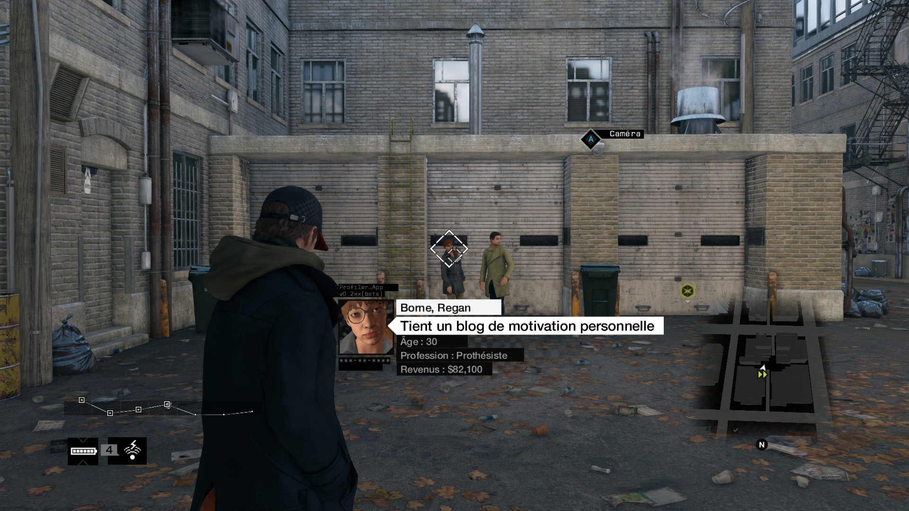
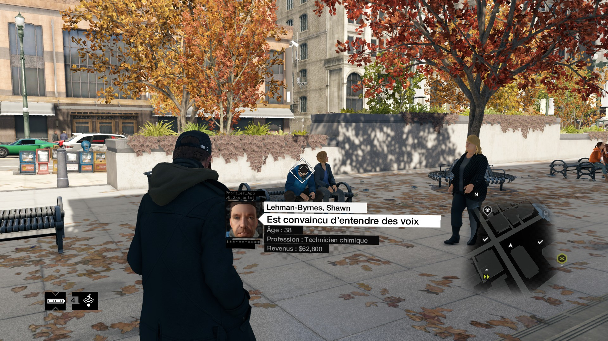
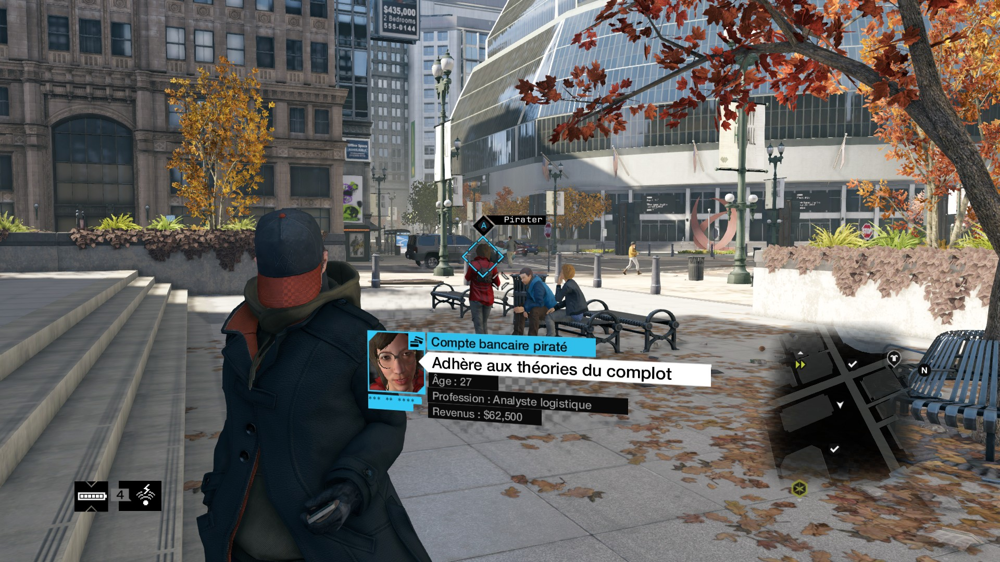
Avant de répondre à la question "est-ce réaliste", posons d'abord les
bases.
Quels types d'informations avons-nous ici ?
→ Le nom et le prénom
→ Un fait descriptif
→ L'âge
→ La profession
→ Les revenus annuels
Ces informations sont-elles privées ou peuvent-elles être retrouvées publiquement ? C'est une question qui mérite de la profondeur.
Commençons par rappeler que ces informations sont, dans leur ensemble, considérées comme des données personnelles. En Europe, le RGPD définit les données personnes comme « toute information concernant une personne physique identifiée ou identifiable (...) » (source). Ces informations entrent donc dans cette catégorie.
Ce qui rend le Profiler si puissant, c'est la mise en contexte :
→ Connaître la profession d'une personne isolément, c'est une
information relativement anodine (tout le monde s'en fout)
→ Y associer son nom, ses revenus, un fait descriptif, précis, et la
localiser précisément en temps réel, c'est probablement plus
préoccupant.
C'est là que le jeu touche une corde sensible de la réalité, l'effet cumulatif des données. Prise séparément, chaque pièce n'a que très peu de valeur, elles ne sont que données. (description élémentaire d'une réalité sorti de tout contexte (cf mon cours d'archi 😉)). Mais une fois assemblées, elles révèlent une image précise de la personne ciblée. (elles deviennent alors une information, une interprétation d'un ensemble de données dans un contexte déterminé)
Alors, est-ce réaliste ?
Dans le monde réel, ce type de profilage est tout à
fait réalisable.
Ce type de profilage porte un nom : OSINT (Open
Source Intelligence ou Renseignement de Sources Ouvertes). C'est une
pratique qui consiste à collecter, croiser et interpréter des données
librement accessibles (et donc souvent publiées volontairement) pour
en extraire de l'information exploitable. (source)
Nous vivons dans un monde sur-numérisé, où chacun expose volontairement (et parfois inconsciemment) des fragments de sa vie sur Internet. Il devient très facile de piocher parmi les différents réseaux sociaux d'une personne et de construire un profil complet sur base de son empreinte numérique, touchant à la plupart des axes importants de son existence : identité, relations, habitudes, opinions, emploi, santé, ..
Ce que le jeu exagère, c'est la vitesse et la précision avec laquelle
on obtient les informations.
A l'heure actuelle, nous ne sommes pas encore au niveau de
Watch Dogs, mais nous nous en rapprochons dangereusement.
Il existe une multitude d'outils OSINT qui permettent de récolter rapidement un grand nombre d'informations sur une cible. Plus on avance, plus ces outils gagnent en performance et en précision, on peut facilement imaginer qu'avec l'essor de l'IA générative*, des modèles multimodaux* et des bases de données massives, un outil comme le Profiler pourrait voir le jour dans un avenir très proche.
*L'IA générative est un type d'IA capable de créer de nouveaux
contenus en s'inspirant de données d'entraînement existantes
*Un modèle multimodal est un modèle IA entraîné sur plusieurs types
de données (textes, images, vidéos, ...)
Dans les moteurs de recherche à reconnaissance faciale, on peut parler de PimEyes. En lui fournissant la photo d'une personne, il retrouve d'autres images disponibles publiquement (c'est très précis, sa version gratuite est déjà très puissante).
En creusant, j'ai trouvé un logiciel encore plus avancé,
ClearviewAI.
C'est une base de données privée, alimentée par des milliards d'images
scrappées sur le web sans consentement. Elle est principalement
utilisée par des entités gouvernementales et policières (mais ses
usages tendent à s'élargir).
Mais cette technologie ne va pas sans son lot de scandales..
→
https://www.lefigaro.fr/secteur/high-tech/reconnaissance-faciale-la-societe-clearview-ai-accusee-de-surveillance-de-masse-illegale-20210204
→
https://www.rtbf.be/article/investigation-clearview-ai-quand-la-reconnaissance-faciale-porte-atteinte-a-la-vie-privee-11212380
→
https://www.organedecontrole.be/files/DIO21006_Rapport_Contr%C3%B4le_Clearview_F_00050441.pdf
Il faut être très prudent, le monde numérique est un immense champ de bataille invisible, il est crucial de prendre conscience des enjeux. Ces outils sont extrêmement puissants et leur usage engage donc une responsabilité morale et légale.
Les états tentent en vain de s'aligner sur des règles communes, mais les lois varient fortement d'un pays à l'autre. En Europe, la vie privée est (en théorie) un droit fondamental, tandis qu'aux États-Unis, plusieurs lois permettent à l'état d'accéder plus librement aux données personnelles (Cloud Act, Patriot Act, FISA, Executive Order 12333).
Attention, ce n'est pas tout blanc ou tout noir, toutes ces lois sont discutables, chacun y verra ce qu'il veut. Tout dépend de la vision de chacun (certains sont en faveur d'une surveillance massive pour plus de sécurité, d'autres y sont plus réticents car cela porte gravement atteinte à la vie privée (même quand on n'a rien à cacher)). (aussi, vous vous doutez que je ne peux pas développer toutes ses lois, ce n'est pas le sujet ici (mais ça pourrait l'être plus tard, c'est intéressant d'étudier tout ça en profondeur))
Pour en revenir au profilage automatisé, de nombreuses entreprises commencent à émerger (notamment dans le marketing ou la prospection commerciale). Des outils comme Juicebox (PeopleGPT), Humantic AI ou Crystal Knows utilisent l'IA pour générer des profils psychologiques ou comportementaux à partir des traces numériques laissées sur des réseaux sociaux.
2. Accès aux caméras de surveillance et caméras domestiques
Qui peut parler de hacking sans parler de
hacking de caméras ?
Dans le fantasme collectif, c'est certainement le type de hack
incontournable.
On voit d'ailleurs parfois des personnes utiliser des caches sur leur
caméra de pc (la paranoïa et le laxisme se confrontent d'ailleurs
assez souvent à ce sujet 🙂).
Dès le début du jeu, Aiden possède déjà cette abilité passive. Elle lui permet entre autre d'accéder à des endroits encore inaccessibles physiquement pour lui, et marquer des ennemis (voir réaliser d'autres hacks à distance).
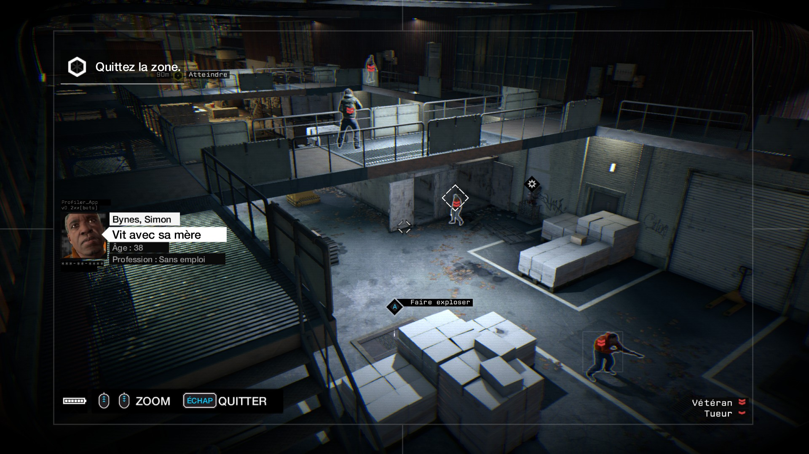
Très utile quand il s'agit de faire de la reconnaissance et connaître
l'environnement de sa cible.
Dans ce Chicago fictif, les rues sont parsemées de caméras de
surveillance, elles permettent une meilleure jouabilité afin d'établir
des plans d'attaques ou d'accéder à des ressources lointaines.
Mais au-delà du gameplay, qu'en est-il de la réalité ? Est-il possible
de hacker une caméra ?
La réponse est simple : oui, et ce n'est pas de la science-fiction.
Aujourd'hui, n'importe qui peut s'acheter des caméras IP sur internet afin de sécuriser sa maison. Le problème, c'est que beaucoup de ces dispositifs sont mal configurés par défaut. Il n'est pas rare que des utilisateurs laissent les identifiants d'usine (souvent admin:admin d'ailleurs..), exposant ainsi leur caméra à quiconque sait où chercher.
Il ne faut pas chercher bien loin, d'ailleurs, des moteurs de recherches comme Shodan.io permettent de scanner l'entièreté d'internet à la recherche d'objets connectés mal configurés.
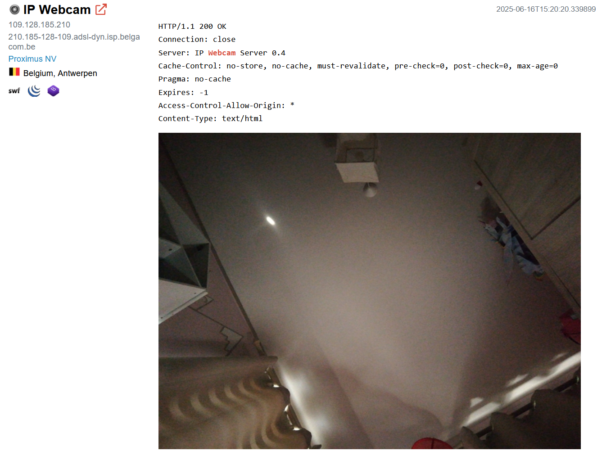
Ce n'est même pas du piratage au sens premier du terme. Ici, il s'agit plutôt d'un accès non autorisé rendu par de la négligence.
Mais ce problème ne s'arrête pas aux particiliers. Les entreprises, les hôpitaux, les écoles, les centres commerciaux possèdent eux aussi des caméras. Et là encore, la sécurité est loin d'être toujours au rendez-vous.
Il faut comprendre qu'une caméra connectée, ce n'est ni plus ni moins qu'un mini-ordinateur (au même titre qu'un frigo connecté ou que n'importe quel objet faisant partie de l'IoT (imprimantes, enceintes, ...)). Une caméra fonctionne grâce à un firmware, un logiciel embarqué qui fait le lien entre le matériel et les logiciels tiers, comme les applications utilisées pour visualiser ou configurer la caméra.
Et comme n'importe quel système informatique, une caméra peut présenter des failles qu'un attaquant peut exploiter pour détourner son usage. Accès à distance, exécution de code, contournement d'authentification, les possibilités sont nombreuses, surtout lorsque les mises à jour sont rares ou que les configurations par défaut sont laissées telles quelles.
Si on s'appuie sur le schéma proposé dans l'un des articles de Securithings, presque chaque noeud du système représente une potentielle surface d'attaque : :
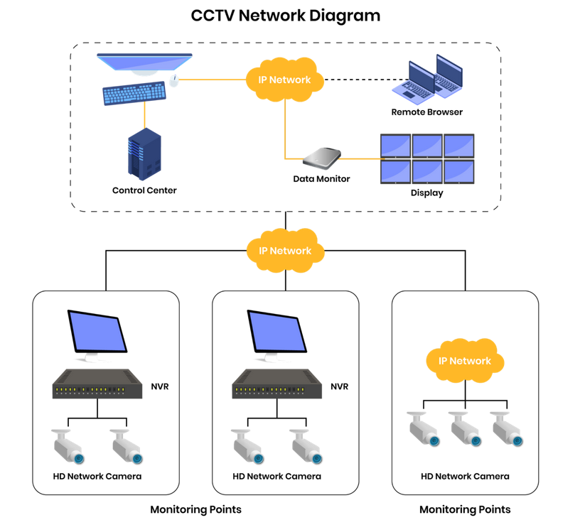
C'est tout un écosystème interconnecté, et donc tout autant de portes d'entrée possibles pour un attaquant.
Le sujet est vaste et super intéressant, j'ai trouvé quelques articles
qui en parlent :
→
https://www.vectra.ai/blog/turning-a-webcam-into-a-backdoor#step-1-dumping-the-flash-memory
→
https://securithings.com/camera-vulnerability/cctv-hacking
https://www.eufy.com/blogs/security-camera/how-ip-cameras-work
→
https://www.europ-camera.fr/blog/cameras-de-surveillance-et-cybersecurite-proteger-son-reseau-domestique-n152
→
https://us.norton.com/blog/iot/what-is-firmware
Pour en terminer avec ces caméras, la réponse à la question "Peut-on pirater des caméras ?" est Oui. Mais comme l'histoire du Profiler, Watch Dogs exagère la facilité déconcertante avec laquelle on accède à ces caméras. Même si ça peut être très simple, naviguer de caméras en caméras n'est pas encore possible avec un simple téléphone, c'est un travail un peu plus laborieux. :-)
3. Feux rouges, ponts et infrastructures urbaines
Passons maintenant aux infrastructures urbaines, Watch Dogs permet au joueur d'utiliser son environnement comme bon lui semble afin de se sortir de situations compliquées. Changer la couleur des feux rouges, faire exploser une canalisation, abaisser des bornes ou encore activer un pont, autant de possibilités offertes au joueur pour piéger ses ennemis, s'échapper ou créer le chaos.
Canalisation
Bornes
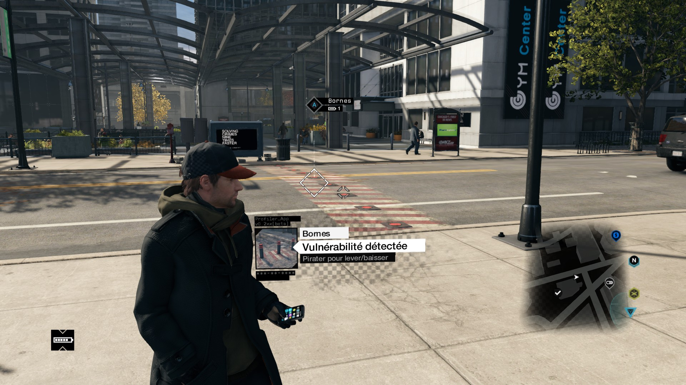
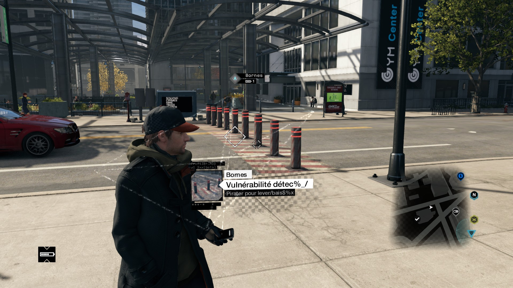
Feux rouges
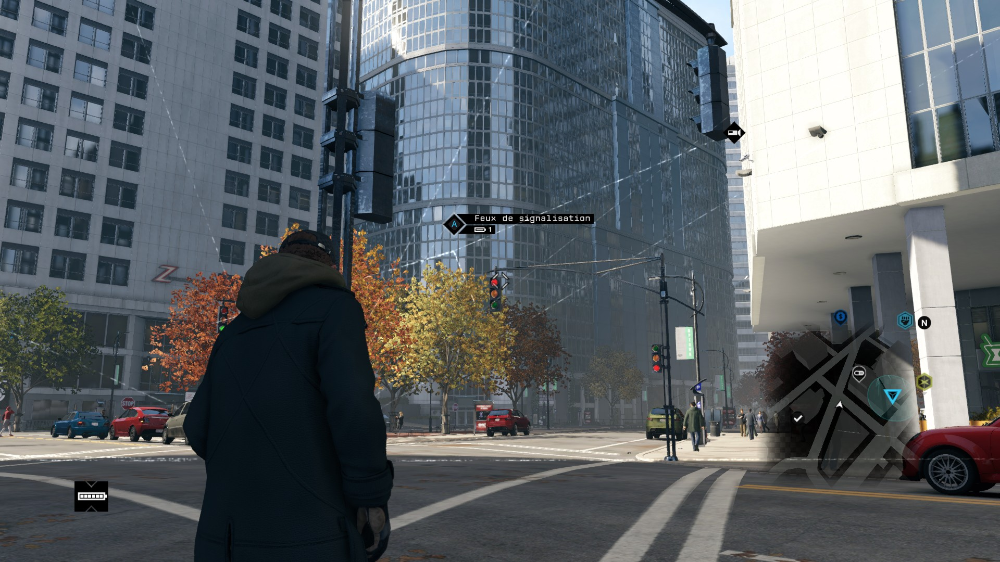
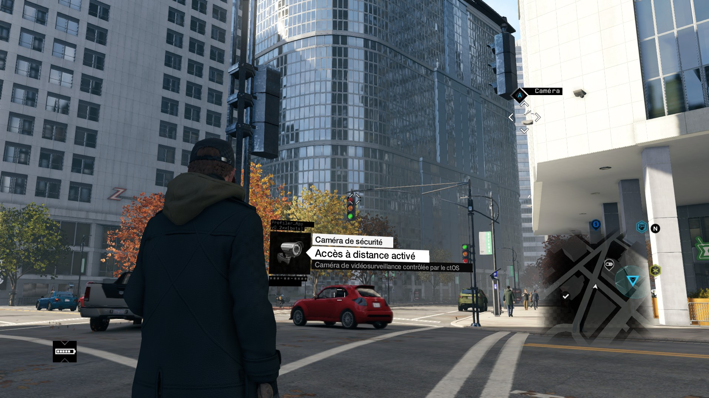
Nous sommes ici dans une logique de ville comme terrain de jeu, où l'urbanisme devient un outil de piratage. Ce qui est intéressant, c'est que le jeu s'appuie sur une idée bien réelle, les villes sont de plus en plus connectées. On parle de smart cities, de systèmes de gestion centralisée du trafic, d'automatisation de transports, de gestion à distance de l'éclairage ou des réseaux d'eau. Ces systèmes utilisent souvent des protocoles industriels comme SCADA, Modbus, ou BACnet, conçu à des époques où la cybersécurité n'était même pas un sujet.
Dans la vraie vie, est-ce qu'un hacker pourrait interagir avec l'infrastructure urbaine ? La réponse est oui, dans certains cas.
Les systèmes de contrôle d'infrastructures critiques sont parfois exposés sur internet, sans sécurité suffisante. Et là, c'est jackpot pour l'attaquant.
Les exemples concrets ne manquent pas.
Aujourd'hui, de plus en plus de villes adoptent des systèmes de gestion intelligents, que l'on appelle C-ITS (Système de transports intelligents coopératifs), capables d'adapter dynamiquement la circulation. Ces feux intelligents peuvent par exemple passer au vert automatiquement à l'approche d'un véhicule prioritaire (comme une ambulance ou les pompiers). Ce type d'intelligence se base sur la communication entre les véhicules et les infrastructures (on appelle ça V2X (Vehicle to Everything)), où les voitures, les feux, les panneaux et même les piétons finissent tous par échanger des données en temps réel.
Dans un avenir proche, tous les véhicules seront connectés. Et on peut déjà imaginer les dérives.
En avril 2025, en Californie, des feux de circulation ont été piratés, et remplacés par des messages vocaux diffusés avec les voix deepfakées d’Elon Musk et Mark Zuckerberg. (source1, source2)
En 2024, un chercheur en cybersécurité, Andrew Lemon, a démontré qu'il était possible avec de simples commandes d'accéder à l'interface de configuration d'un feu intelligent (Q-Free, Intelight) et de forcer manuellement son état (passer du rouge au vert ou inversement). Les systèmes étaient exposés en clair sur le réseau, sans aucune authentification. En signalant les vulnérabilités aux fabriquants, il a reçu une lettre d'avocat qui lui demandait de taire toute divulgation en prétendant que l'appareil était hors-service et que sa recherche était une violation de la loi. 🤡 (part1, part2, part3 )
Sa réaction sur LinkedIn https://www.linkedin.com/posts/lemonitup_i-submitted-a-critical-vulnerability-to-a-activity-7208886811480195072-aFU6/
Avec l'émergence des smart cities, il deviendra tout à fait possible d'interférer avec l'infrastructure urbaine connectée. Il ne faut pas se tromper, tout ce qui est relié à internet peut potentiellement être accessible si les mesures de sécurité ne sont pas rigoureusement mises en place (et encore... Cela ne garantit pas qu'un détournement ne soit pas envisageable à l'avenir...)
4. Vol d'argent via piratage bancaires depuis le téléphone
Le jeu permet aussi de développer une compétence qui permet de pirater à distance le compte en banque de certains NPC. On pirate, on se rend à un distributeur de cash, et on récupère l'argent de la victime.
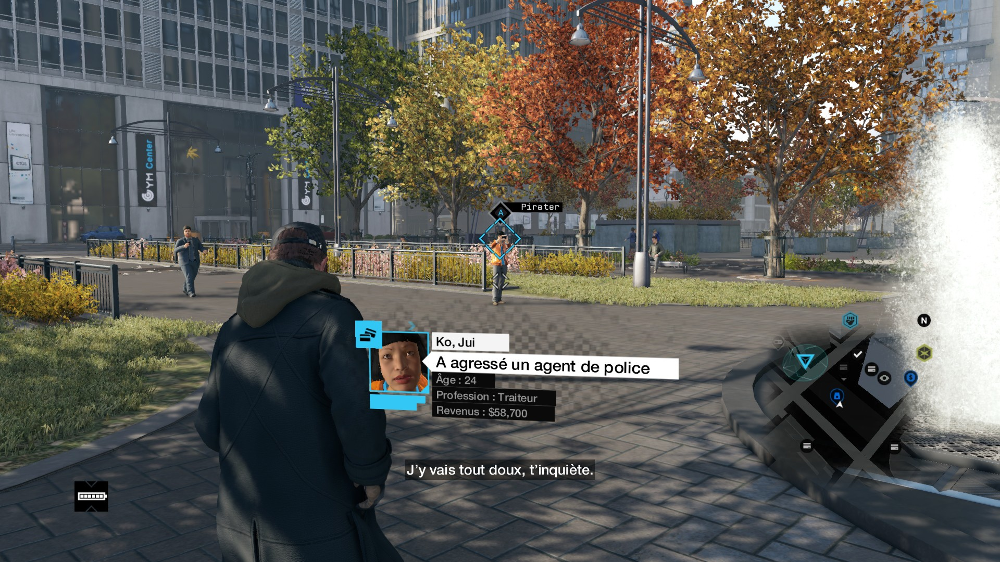
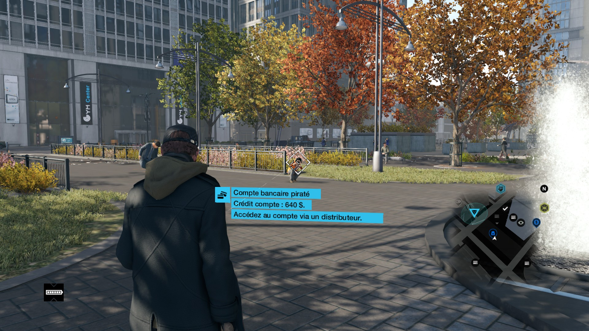
Bon, l'idée ici est assez fantasmée et grossie.
Reconnaître un compte en banque compromis d'un NPC,
le pirater à petite distance, et lancer une attaque sur un
ATM qui donne un espèce d'écran bleu de la mort, c'est complètement
ubuesque.
Ce point va être rapide.
Cette façon de faire n'existe pas.
Pirater un compte en banque reste faisable, mais c'est beaucoup plus chronophage, risqué et méthodique. Nous sommes sur du coup préparé à l'avance, souvent très ciblé, où chaque étape est surveillée et testée : collecte d'informations personnelles (phishing, malwares, fuites de données, ...), ingénierie sociale pour tromper la banque ou la victime, exploitation de failles logicielles dans les systèmes bancaires ou applications mobiles.
Mais au-delà de ces plans, il existe aussi et
surtout des approches plus opportunistes...
Par exemple, le phishing à grande échelle, où des millions de mails
sont envoyés en espérant récolter quelques accès bancaires (existe
aussi via SMS).
Sinon, la première idée qui viendrait à n'importe qui voulant voler de l'argent, ce sont les attaques directement sur les distributeurs. (un état des lieux de ces attaques ici)
Donc oui, pirater un compte, c'est possible, mais il faut être réaliste, Watch Dogs exagère le trait. C'est tout sauf instantané.
5. Interception des conversations téléphoniques / SMS
Dans le jeu, écouter une conversation téléphonique ou lire les sms d'un passant est une mécanique presque banale. Il suffit d'être à proximité, de viser la personne avec son téléphone, et comme par magie, le contenu de ses communications s'affiche.
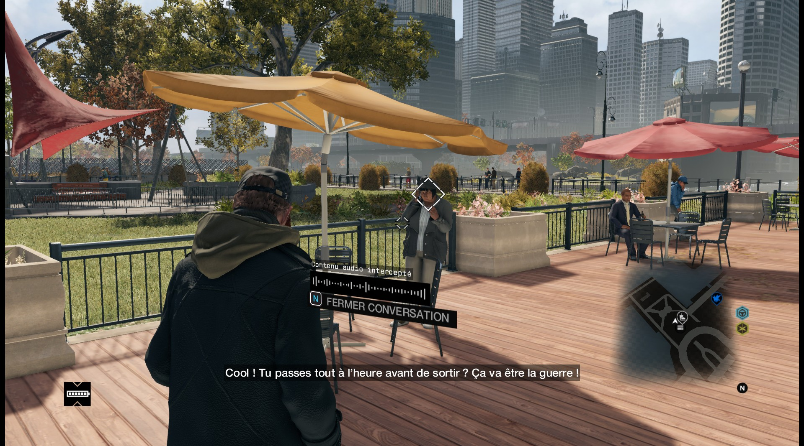
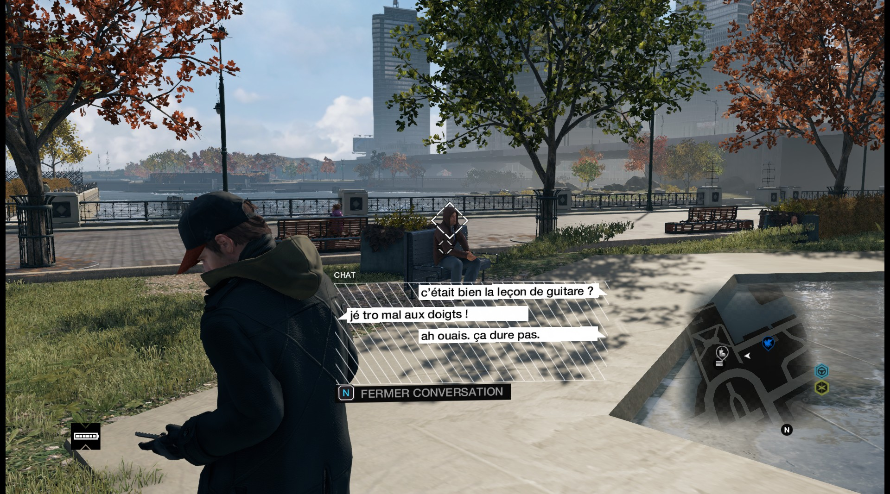
Mais dans la réalité, est-ce possible ? La réponse est
oui.
Pas avec une simple application mobile, mais avec un matériel assez
connu : l’IMSI Catcher.
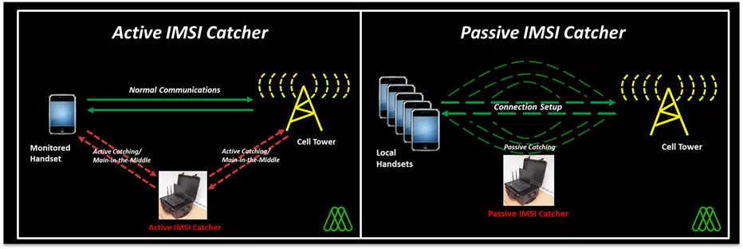
Un IMSI Catcher est un dispositif qui se fait passer pour une antenne relais mobile. C’est ce qu’on appelle un faux relais GSM. Il émet un signal plus fort que ceux des vraies antennes téléphoniques autour de lui, et comme les téléphones cherchent toujours à se connecter à la meilleure source, ils se connectent sans se poser de question.
Une fois le téléphone connecté au faux relais, l’IMSI Catcher peut
forcer une rétrogradation en 2G, un ancien protocole qui présente deux
grandes failles :
→ Le chiffrement (A5/1) est cassé depuis 2009 (source).
→ Pas d’authentification mutuelle.
L’attaquant peut donc intercepter les appels en clair, les enregistrer, voire les rediriger. C’est une attaque de l’homme du milieu (ou Man-in-the-Middle pour les puristes).
Une façon d'atténuer ce risque, c'est de désactiver manuellement
l'accès à la 2G dans les paramètres de son téléphone (si le modèle le
permet).
Ça suffit parfois à refuser la connexion aux IMSI Catchers, puisqu'ils
tentent en vain de noyer les vrais signaux avec des signaux plus
puissants en 2G pour exploiter ses vulnérabilités.
(Un article du Monde sur les IMSI Catchers : https://www.lemonde.fr/pixels/article/2015/03/31/que-sont-les-imsi-catchers-ces-valises-qui-espionnent-les-telephones-portables_4605827_4408996.html)
L'interception des SMS repose sur le même principe.
Les SMS ne sont pas chiffrés. Contrairement aux idées reçues, ils
transitent en clair sur le réseau de l'opérateur. Ils peuvent donc
être interceptés exactement de la même manière, avec un IMSI Catcher,
surtout si le terminal est rétrogradé en 2G.
Il existe une autre méthode, l'exploitation du protocole SS7 (Signaling System 7).
Le SS7 est un protocole utilisé par les opérateurs téléphoniques pour faire transiter des informations de signalisation entre réseaux : transfert d'appels, envoi de SMS, itinérance, géolocalisation, etc.
Pour plus d'informations, je vous invite à lire le PDF explicatif sur le protocole SS7 rédigé par Lucien Sikapa (17 mai 2022) (source)
Le problème, c'est que ce protocole est trèèèès ancien. Il date des années 80, et il repose entièrement sur la confiance entre les opérateurs.
Un attaquant qui parvient à obtenir un accès légitime au réseau SS7 (par exemple, via un petit opérateur étranger mal sécurisé) peut lire des SMS, rediriger un appel ou encore localiser un téléphone avec une grande précision.
Tout ça sans que la victime ne se doute de rien (comme dans Watch Dogs 🤓)
Pour s'en préserver, le premier réflexe, c'est de ne jamais faire confiance aux SMS pour des usages sensibles !! (d'ailleurs, il faudrait que les services arrêtent de nous envoyer des codes de confirmation par ce canal, c'est DANGEREUX)
Ils n'ont aucun chiffrement de bout en bout et sont vulnérables aux attaques réseaux. À la place, il faut absolument privilégier les applications de messagerie sécurisée et chiffrée (je ne donnerai pas de noms, une petite recherche Google vous donnera la connaissance (et ce qui vous convient le plus..))
Enfin, il y a les méthodes un peu plus classiques : installer un
malware sur le téléphone de la cible.
Les spyware peuvent accéder à tout ce qui passe par le téléphone
(messages, appels, micro, caméra). Et là, peu importe le chiffrement,
le téléphone est déjà infecté.
Pegasus en est un exemple bien connu : https://nordvpn.com/fr/blog/pegasus-espionnage/
Conclusion : Oui, c'est faisable. Encore une fois, c'est un peu plus laborieux que ce que montre le jeu, mais c'est à 100% faisable.
6. Détection prédictive des crimes à venir via surveillance massive
Dans Watch Dogs, on incarne un personnage surnommé "Le Justicier", et nos actions influencent directement la perception que le public a de nous. Si l’on commet des bavures, comme tuer des civils, la réputation chute, rendant les passants plus enclins à prévenir la police dès qu’ils nous repèrent. À l’inverse, empêcher un crime en cours améliore notre image, ce qui réduit le risque d’être dénoncé.
Lorsqu’on se promène dans la ville, le jeu peut générer des alertes de "crime détecté". Un marqueur apparaît alors sur la carte, signalant une zone à surveiller. Il faut s’y rendre, observer les passants, et utiliser le profilage pour identifier un comportement suspect, reconnaître la menace, et intervenir avant qu’il ne soit trop tard.
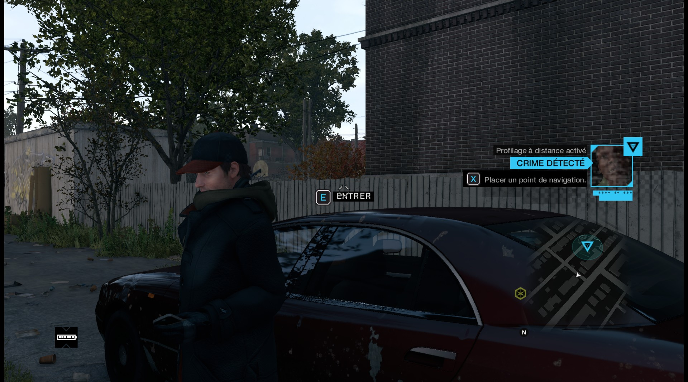
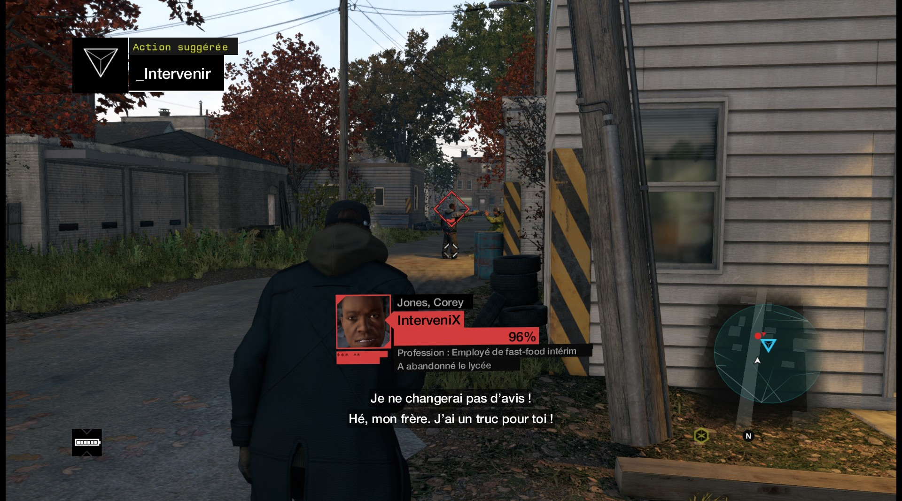
Ce concept est inspiré du film Minority Report où des humains mutants (appelés précogs) peuvent prédire les crimes à venir grâce à leur don de précognition.
Mais est-ce que ce genre de système existe dans le monde réel ?
Contre toute attente, la réponse est oui, des projets
similaires sont bel et bien déployés aujourd'hui, parfois depuis
plusieurs années.
Dans le jeu, on pirate le ctOS, un système urbain hyperconnecté qui centralise les données de la ville en temps réel (vidéosurveillance, téléphones, messages, réseaux sociaux, ...). Grâce à cette surveillance de masse, le système anticipe des crimes probables, le joueur reçoit des alertes liées à ces comportements jugés à risque, l'identification des menaces repose sur une analyse algorithmique des données personnelles. ( source )
Ici, les précogs sont remplacés par des algorithmes prédictifs.
Depuis une dizaine d’années, plusieurs villes et États à travers le monde testent ou exploitent déjà des systèmes de police prédictive. Deux grandes approches coexistent aujourd'hui : l'analyse spatiale (où un crime est susceptible de se produire) et l'analyse individuelle (qui risque de le commettre ou d'en être la victime)
Le cas PredPol → Prédire les zones à risque
L'un des logiciels les plus médiatisés, c'était
PredPol (Predictive Policing). Il a été développé à
l'origine pour la police de Los Angeles (inspiré des modèles de
prédiction des séismes). Le logiciel analysait les données historiques
de criminalité (heures, lieu, type d'infraction) pour générer des
zones dites "chaudes" afin d'y envoyer des patrouilles de police.
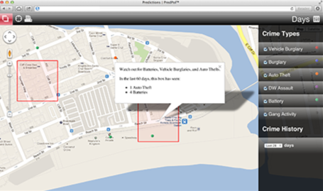
Ce système a été utilisé dans des villes comme Los Angeles, Atlanta ou encore Chicago, avec la promesse d'une meilleure allocation de ressources policières, et d'une baisse de crimes. Officiellement, il ne prenait aucune donnée personnelle en compte, uniquement des lieux, des dates et des types d'infractions (on est donc sur l’approche spatiale).
Mais dans la pratique, la promesse technologique s'est vite heurtée à plusieurs réalités problématiques.
Dès ses premières années d'utilisation, des critiques sont apparues. Des chercheurs, des ONG et des journalistes ont souligné un effet pervers : ce que fait PredPol, c'est juste reproduire les biais déjà présents dans les données d'origine .
Concrètement, les quartiers populaires, racisés ou historiquement plus surveillés génèrent plus d'interventions policières, donc plus de données, donc plus de prédictions. C'est un cercle vicieux. Le logiciel apprend donc à sur-surveiller ce qui l'a déjà été et laisse de côté des zones pourtant criminogènes mais moins observées. (or ça n'était pas l'objectif)
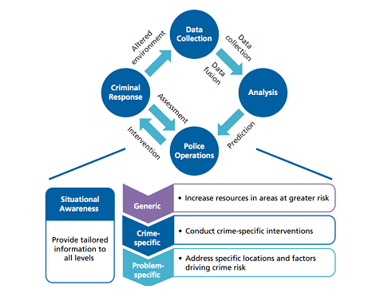
Sous la pression de nombreuses critiques sur l’efficacité réelle du dispositif, son manque de transparence et ses effets sur certaines communautés, la ville de Los Angeles a finalement décidé d’abandonner PredPol en 2020.
(Rapport Audit LAPD :
https://www.lapdpolicecom.lacity.org/031219/BPC_19-0072.pdf )
(Rapport Stop LAPD Spying :
https://stoplapdspying.org/wp-content/uploads/2018/05/Before-the-Bullet-Hits-the-Body-May-8-2018.pdf )
(The People's Response to OIG Audit :
https://stoplapdspying.org/wp-content/uploads/2019/03/Peoples_Response_with-hyper-links.pdf )
Le cas de la Chicago Heat List → Prédire les personnes à risque
A Chicago, un programme a été mis en place en 2012 qui tentait de
générer une liste de personnes jugées "à risque élevé" de commettre ou
de subir un crime. La Heat List conçue en
collaboration avec des universités et des services de police se basait
sur plusieurs critères :
→ casier judiciaire
→ implication passée dans des altercations
→ proximité avec des individus eux-mêmes ciblés
→ lieu de résidence
→ et encore d'autres
Les personnes identifiées faisaient l'objet d'une surveillance accrue, de visites à domicile et même de lettres d'avertissement alors qu'ils n'avaient commis aucun délit. La seule preuve étant "un score à risque généré par un algorithme" (d'ailleurs, je me demande si cela ne provoquait/poussait pas plus le crime).
Le projet a été abandonné en 2019/2020 après plusieurs enquêtes journalistiques montrant son inefficacité et son caractère discriminatoire. (une histoire de fou ici : https://www.theverge.com/c/22444020/chicago-pd-predictive-policing-heat-list )
En Europe, l'idée de police prédictive séduit aussi. Des projets ont vu le jour en Allemagne, aux Pays-Bas et en Belgique.
Un rapport de l'ONG européenne Statewatch, publié en avril 2025, appelle à un moratoire sur les technologies de police prédictive en raison des risques majeurs qu'elles font peser sur les droits fondamentaux. Selon ce rapport, ces outils présentent "un potentiel de surveillance de masse incompatible avec l'État de droit", en plus d'un manque flagrant de transparence et de contrôle démocratique. (le rapport complet ici) (le résumé ici)
Alors, dans Watch Dogs, on incarne un justicier qui agit sur des prédictions générées par une IA omnisciente, le ctOS. Dans la vraie vie, ces prédictions existent aussi, mais elles sont peu contrôlées, biaisées et opaques.
Le jeu nous fait croire à une technologie froide, objective, presque infaillible (pas un seul des crimes détectés n'est un faux positif). La réalité nous rappelle que derrière les algorithmes, il y a des choix humains, des données imparfaites et des conséquences sociales réelles.
Conclusion
En revisionnant Watch Dogs, j'ai voulu aller au-delà du gameplay spectaculaire et me pencher sur les ponts que le jeu tisse entre la fiction et la réalité. A travers l'analyse de 6 techniques de piratage présentées dans le jeu, j'ai mené des recherches pour vérifier lesquelles relevaient du pur divertissement et lesquelles existaient bel et bien.
A ma grande surprise, la majorité de ces techniques trouvent des équivalents dans notre quotidien. Le jeu exagère et simplifie parfois pour fluidifier l'expérience, mais le fond technologique reste souvent réaliste.
Le Chicago de Watch Dogs, entièrement soumis au ctOS, incarne une ville hyperconnectée, où la moindre action peut être observée, analysée, prédite. Certains passants dans le jeu expriment d'ailleurs leur malaise face à cette transition brutale : ils n'avaient pas vu venir cette perte de contrôle, et redoutent désormais que chacun de leurs gestes soit surveillé. Ce détail narratif est peut-être l'un des plus justes (et des plus inquiétants).
Nous vivons dans un monde où les technologies de surveillance avancent souvent plus vite que leur régulation. D'où l'importance de développer une conscience critique, de comprendre les mécanismes techniques à l'oeuvre, mais aussi de débattre collectivement de l'usage qu'on veut faire de ces outils. L'éthique ne doit pas être une option mais une boussole.
Cet exercice d'analyse m'a passionné, j'y ai appris ÉNORMÉMENT et j'espère pouvoir prolonger cette série en explorant d'autres mécanismes de piratage de ce jeu (ou des opus suivants 😉).
Sources
- https://www.fortinet.com/fr/resources/cyberglossary/doxing
- https://fr.wikipedia.org/wiki/Clearview_AI
- https://www.lefigaro.fr/secteur/high-tech/reconnaissance-faciale-la-societe-clearview-ai-accusee-de-surveillance-de-masse-illegale-20210204
- https://www.belgium.be/fr/justice/respect_de_la_vie_privee/protection_des_donnees_personnelles/donnees_personnelles
- https://guardia.school/boite-a-outils/quest-ce-que-losint.html
- https://eur-lex.europa.eu/legal-content/FR/TXT/HTML/?uri=CELEX:32016R0679&from=EN
- https://www.inami.fgov.be/fr/professionnels/info-pour-tous/reglement-general-sur-la-protection-des-donnees-rgpd#qu-entendon-par-donnees-a-caractere-personnel
- https://www.youtube.com/watch?v=WR0sSv87H0s
- https://www.youtube.com/watch?v=Vvqa5bxDU9Y
- https://www.biznov.fr/post/mod%C3%A8le-multimodal
- https://www.youtube.com/watch?v=-JkBM8n8ixI
- https://www.shodan.io
- https://www.amazon.fr/cache-webcam-High-Tech/s?k=cache+webcam&rh=n%3A13921051
- https://www.vectra.ai/blog/turning-a-webcam-into-a-backdoor#step-1-dumping-the-flash-memory
- https://securithings.com/camera-vulnerability/cctv-hacking
- https://www.eufy.com/blogs/security-camera/how-ip-cameras-work
- https://www.europ-camera.fr/blog/cameras-de-surveillance-et-cybersecurite-proteger-son-reseau-domestique-n152
- https://us.norton.com/blog/iot/what-is-firmware
- https://www.four.co.uk/what-is-a-smart-city/
- https://datanews.levif.be/actualite/piratage-des-feux-de-circulation-aux-pays-bas-aussi-possible-en-belgique-mais-de-maniere-limitee/
- https://www.ouest-france.fr/high-tech/panne-informatique-mondiale-ou-en-est-on-9fcd57b2-4665-11ef-b334-f8bcde493c96
- https://www.redthreatsec.com/blog/greenlightspart1
- https://www.redthreatsec.com/blog/give-me-the-green-light-part2-dirty-little-secrets
- https://www.redthreatsec.com/blog/give-me-the-green-light-part3-traffic-controller-surgeon
- https://www.cerema.fr/fr/actualites/systemes-transports-intelligents-cooperatifs-c-its-cas-usage
- https://www.rtbf.be/article/plus-de-26-millions-pour-l-installation-de-feux-tricolores-intelligents-en-wallonie-11075964?utm_source=chatgpt.com
- https://www.rtl.be/actu/belgique/societe/cest-une-premiere-en-europe-les-feux-passeront-automatiquement-au-vert-pour/2025-03-04/article/741353?utm_source=chatgpt.com
- https://www.liberation.fr/international/amerique/en-californie-des-feux-de-circulation-pirates-avec-les-voix-de-musk-et-zuckerberg-20250416_QF3WMUWK2NARXAL3GJDXILHQ5Q/
- https://www.tiktok.com/@rosecampau/video/7492297402578111787?refer=embed
- https://www.fortinet.com/fr/resources/cyberglossary/scada-and-scada-systems
- https://www.ip-systemes.com/le-protocole-bacnet-un-protocole-de-communication-cle-dans-lindustrie.html#
- https://www.automation-sense.com/medias/files/guide-du-modbus-pour-les-nuls-extrait.pdf
- https://www.malwarebytes.com/fr/stuxnet
- https://www.youtube.com/watch?v=Fqk_VUMzY_M
- https://www.europol.europa.eu/sites/default/files/documents/public_-_cashing_in_on_atm_malware.pdf
- https://fr.scribd.com/document/574368863/II-PROTOCOLE-SS7
- https://www.enea.com/insights/adaptive-mobile-imsi-catchers/
- https://www.youtube.com/watch?v=-e2qDOfylD4
- https://www.numerama.com/tech/14772-le-chiffrement-du-gsm-est-casse.html
- https://www.lemonde.fr/pixels/article/2015/03/31/que-sont-les-imsi-catchers-ces-valises-qui-espionnent-les-telephones-portables_4605827_4408996.html
- https://nordvpn.com/fr/blog/pegasus-espionnage/
- https://www.lapresse.ca/international/etats-unis/2023-12-06/police-predictive/l-intelligence-artificielle-pour-prevenir-le-crime.php
- https://www.service-public.fr/particuliers/vosdroits/F32270
- https://www.lemonde.fr/les-decodeurs/article/2018/03/13/la-police-predictive-comment-ca-marche_5270327_4355770.html
- https://hal.science/hal-03452671/file/Laplace_2021_Police_predictive_%28version%20d%C3%A9finitive%29.pdf
- https://www.amnesty.org/fr/latest/research/2021/06/sous-surveillance-la-reconnaissance-faciale-met-les-noirs-et-les-marrons-en-danger/
- https://www.sciencespo.fr/mass-violence-war-massacre-resistance/fr/document/assassinat-cible-mohammed-mabhouh-2010.html
- https://www.cia.gov/static/fb2f414d3a2e9c7d50fa5a2c277ae1d1/Revolutionary-Warfare.pdf
Et bien d'autres sites pour lesquels j'ai oublié de prendre les liens. 😁